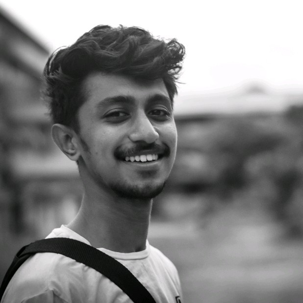
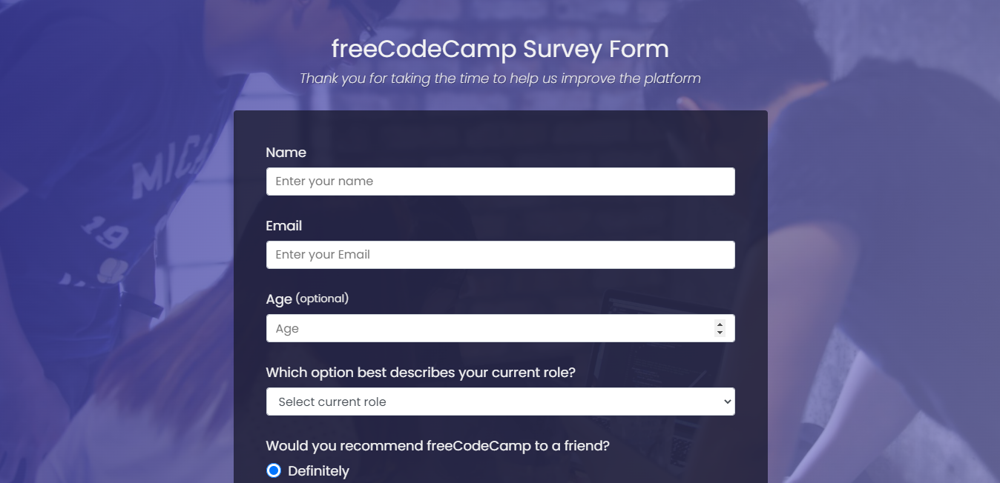
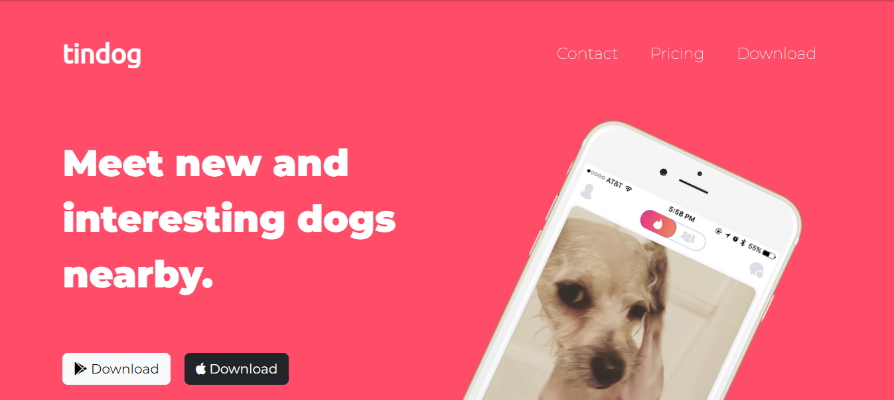
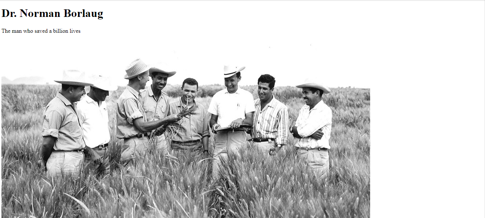

|  |
Nayan B AnandWeb Developer |
Contact Info :[CLICK HERE] |
Hi, I'm Nayan, a passionate and dedicated web developer. I have experience in HTML, CSS, and I'm constantly expanding my knowledge and learning new technologies.
In my portfolio, you'll find a collection of projects I've worked on, ranging from simple landing pages to more complex web applications. Each project showcases my skills and knowledge, as well as my attention to detail and user experience.
Feel free to browse my portfolio and see my skills in action.
I am proficient in HTML & CSS.
I have experience working with Bootstrap
I have a basic understanding of web Designing
I have few artistic skills in my pocket, so I can make use of that skill to create responsive designs forany website.
I am also good in sports which allows me to encourage my work with confidence and work with a sportsmanship.
B.tech in Electronics & Communication from APJ Abdul Kalam Technological University, Kerala (2018- )
Higher Secondary in Science stream(Computer Science) from Government Vocational Higher Secondary School(Open School),Calicut, Kerala (2018)
High School from Kendriya Vidhyalaya, Coimbatore, Tamil Nadu (2016)
As a beginner web developer, I am constantly learning and improving my skills in the future, I plan to learn more about React, APIs, and other front-end frameworks. I am slo interested in exploring back-end development and database.
|  |
 |
 |